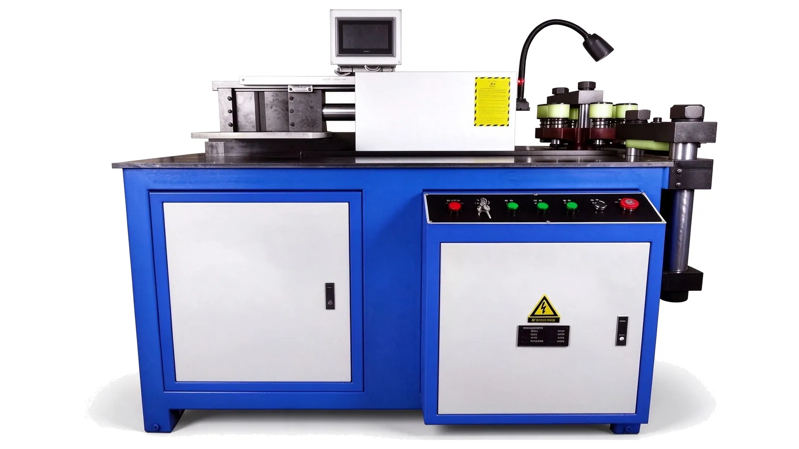
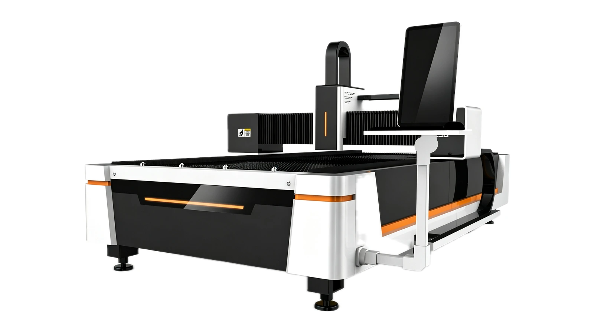

Complementary Machines
Machines that work alongside the core cutting line.

Transformer & busbar
Busbar Processing Machine
Punching, shearing, bending and twisting for the busbar side.

Sheet metal · cutting
Heavy-Duty High-Speed Insulation Board Cutting Machine
CNC cutting and milling for insulation board and pressboard parts.

Sheet metal · laser
Fiber Laser Cutting Machine
Laser cutting for clamps, frames and sheet parts around the core.